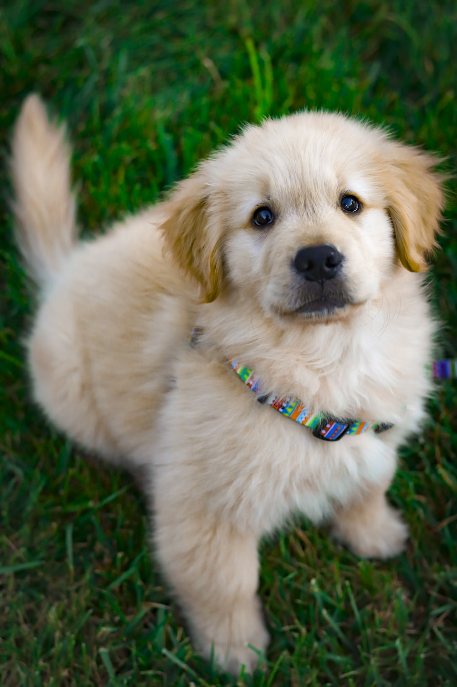

Student
Department of Sociology and Social Work
CHRIST (Deemed to be University), Bengaluru
Have you ever decided to keep a dog at your home? The dog is one of the loyal and confident animals on earth. You will feel fortunate after having a household animal. Also, the honesty and loyalty of a dog are unmatchable. They love their owners without a selfish nature. They also love to roam around their owner the whole day.A dog is one of the helpful animals that consist of a fluffy hairy body. Dogs help in protecting a house from thieves and fraud people during the night. There are so many breeds available on earth. They love to enjoy their time with their owner and family. He also protects their family members from strangers. Instead, they remain gentle and loyal to their family. Dogs also enjoy morning and evening walk with their owners. They need fresh and healthy food for the better growth of their body. They can eat fresh milk and meat for building strength. Dogs also lick their owner to make the owner understand their love.